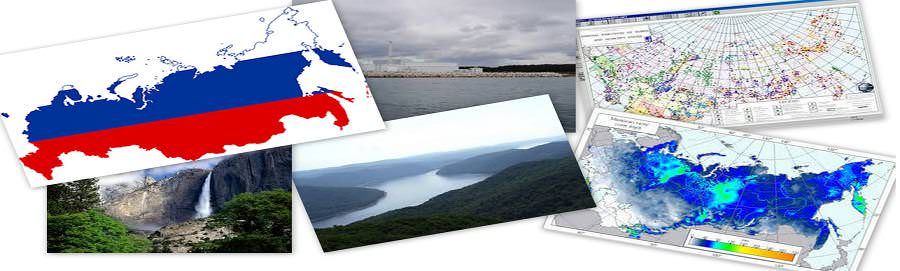
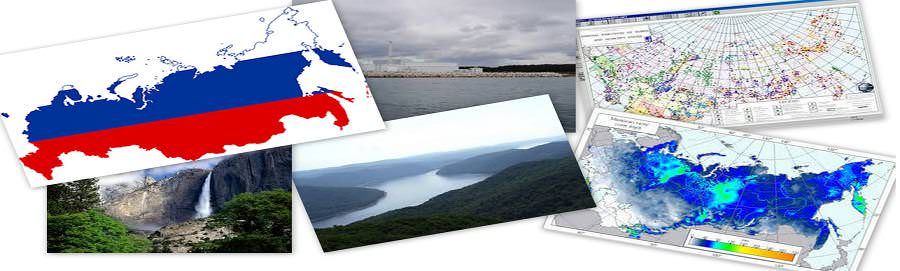

دراسة الحالة
التعلم من الماضي، تحسين المستقبل ...

 



دراسة حالة - إيطاليا
الايطالية مقاطعة يتناول الهيدرولوجي المخاطر مع نظم المعلومات الجغرافية والاستشعار عن بعد:
يقع الإقليم المتمتع بالحكم الذاتي بولزانو في شمال إيطاليا وتشترك في الحدود مع النمسا. مع سطح من 7400 كيلو متر مربع، بولزانو جبلية أساسا، ارتفاعه يتراوح من 200 إلى أكثر من 3800 متر فوق مستوى سطح البحر (ASL). وزارة بولزانو في 30 هي وكالة في المحافظة المسؤول عن حل النزاعات بين البيئة الطبيعية والاحتياجات البشرية. على وجه التحديد، قسم 30 يدير بناء وصيانة التدابير الهندسية للتخفيف من المخاطر الهيدرولوجية والجيولوجية، مثل الاختيار السدود وأمبير؛ المصارف.
لهذا الغرض، في السنوات الماضية، وقد وضعت المحافظة وتنفيذ العديد من قواعد البيانات الجغرافية GIS والتي تشمل قواعد البيانات العامة، مثل نماذج رقمية الارتفاع، والغطاء الأرضي، وخرائط استخدامات الأراضي، و كما شملت مجموعات البيانات أكثر تحديدا، مثل جرد من الفيضانات التاريخية والأحداث الفيضانات الحطام وحصر المنشآت المائية الموجودة بالفعل.وقد وضع مشروع إطار معين يسمى نظام معلومات لالهيدروجيولوجية الأخطار والمخاطر (اللوائح)، برعاية المفوضية الأوروبية وغيرها، لجعل المعلومات اللازمة في إدارة المخاطر في متناول مخططي بولزانو بطريقة بسيطة وموحدة.
كجزء من مشروع اللوائح الصحية الدولية، وقد تم تصميم حوض نظام معلومات إدارة 30 (حوض 30) تطبيق لتبسيط استخراج، على مستوى مستجمعات المياه، من أكثر المعلومات ذات الصلة لأغراض التخطيط و المنشآت الصناعية الجديدة.
منذ أكثر من مديري الفيضانات في الوزارة كانوا بالفعل على دراية منصة برمجيات مكتب ArcGIS، تم تنفيذ 30 حوض امتدادا مكتب ArcGIS. إدخال البيانات المطلوبة من قبل حوض 30 هو كل المكانية وتشمل طبقات عامة عن استخدام الأراضي، والجيولوجيا، والتشكل وطبقات أكثر تحديدا حول الشبكة الهيدرولوجية، والهياكل الهيدروليكية بالفعل، والأخطار الهيدرولوجية.
دراسة حالة - أفريقيا
cدراسة حالة - أفريقيا
قاعدة بيانات للموارد المائية الأفريقية (AWARD) تتضمن أرشيفا ونظم المعلومات الجغرافية الواسعة الأدوات المصممة لتسهيل إدارة الموارد المائية الداخلية المسؤولة والهدف الشامل للأمن الغذائي.
المعلومات المخزنة في أرشيف البيانات تشمل المسطحات المائية، ومستجمعات المياه، والأنواع المائية والأنهار والحدود السياسية، والكثافة السكانية، والتربة، صور الأقمار الصناعية، ووظائفي والبيانات المناخية. وقد تم تصميم AWRD للاستخدام من قبل المسؤولين والمهنيين الفنيين والمحللين المكاني والمعلمين والطلاب.
وقد تم تصميم AWRD بناء على توصيات من لجنة مصايد الأسماك الداخلية وتربية الأحياء المائية في أفريقيا وعلى حد سواء توسعا واستكمالا لمشروع سابق بقيادة إدارة الموارد المائية لبرنامج تنمية المجتمع المحلي، ودعا قاعدة بيانات للجنوب الأفريقي الجماعة الإنمائية للموارد المائية.
لعرض وتحليل البيانات الأرشيفية، AWARD يحتوي على تطبيقات مخصصة وأدوات مبرمجة لتعمل تحت ARCVIEW. وتسمح قاعدة البيانات دمج أنواع مختلفة من المعلومات إلى برنامج متماسك أنه بسبب طبيعته البصرية، من السهل أن نفهم ونفسر.
ويرد نشر قاعدة البيانات في قسمين: مفاهيم ودراسات حالة التطبيق، ودليل تقني والمصنف. الواجهة الأساسية AWARD، ومجموعات أداة، والبيانات جزءا لا يتجزأ من وظيفة AWRD تتوزع في اثنين من أقراص الفيديو الرقمية المصاحبة للدليل التقني والمصنف.
دراسة حالة-روسيا
بسبب التصور المكاني متقدمة وتحليل قدرات نظم المعلومات الجغرافية، والباحثين في جامعة سانت بطرسبرغ الكهربائية (ETU) في روسيا تكون قادرة على تحديد ودراسة المسطحات المائية الطبيعية؛ الملوثين بها؛ المصدر والموقع ومستويات تلوث وكلاء. ومحتوى الملوثات. يوفر تحليلهم المسطحات المائية الطبيعية والمؤسسات الصناعية الفرصة للتنبؤ مستوى التأثير الصناعي ودراسة السيناريوهات المختلفة لتقديم توصيات للاستخدام الرشيد للموارد المائية الطبيعية.
جسم المياه التحقيقات
أنشئ نظام الرصد القائم على نظم المعلومات الجغرافية على جزء من نهر نيفا شمال غرب روسيا، والذي يقع في منطقة Kirovsky لينينغراد أوبلاست. نهر نيفا هو جزء لا يتجزأ من النظام المائي في المنطقة، التي تضم أيضا Onezhskoe بحيرة، نهر Svir، Ladozhskoe بحيرة، Nevskaya غوبا خليج، والجزء الشرقي من Finsky باي. يتأثر هذا النظام المائي بأكمله عن طريق منطقة المتقدمة صناعيا الذي يعتبر المصدر الرئيسي للتلوث. نهر نيفا يستقبل مياه الصرف من محطات معالجة مياه الصرف الصحي البلدية، المياه العادمة غير المعالجة، والنفايات السائلة القادمة من المؤسسات الصناعية والزراعية تقع بالقرب من بنوكها.
يتم تخزين البيانات من نتائج نهر نيفا في نظام معلومات التقييم المتوسط القائم على نظم المعلومات الجغرافية، الذي يهدف إلى إجراء تحليل الهيدروكيميائي للجودة المسطحات المائية لتقييم التأثير السلبي التي تنتجها البشر وتحديد المستويات المسموح بها من هذا العبء البيئي على الموارد المائية. يوفر لها منصة مكتب ArcGIS التكامل واستخدام المعلومات الموزعة، في حين أن المستخدمين تمكن من معالجة البيانات اعتمادا على المجال (الجغرافي أو الإداري) صلته. الوسائل الإعلامية يتكون من قاعدة الطبوغرافية مرتبة في شكل طبقات نظم المعلومات الجغرافية، وقاعدة نموذج من الهيئات الطبيعية والمؤسسات، وقواعد البيانات مع نتائج الرصد، وأنشطة تحليل وإطار تنظيمي.
دراسة حالة-فلوريدا
تقييم أوجه الضعف فلوريدا المياه الجوفية يستخدم GIS:
وضعت مؤخرا المياه الجوفية نماذج الضعف القائم على نظم المعلومات الجغرافية توفر أدوات حماية المياه الجوفية الثمينة مع تطبيقات واسعة النطاق في جميع أنحاء ولاية فلوريدا. تهدف إلى تعزيز جهود حماية الموارد الهشة مياه الشرب في ولاية فلوريدا، ونماذج توفر خيارات جديدة للمخططين المجتمع، وموظفي الأشغال العامة، ومهنيون في مجال البيئة، مياه الأمطار ومياه الصرف الصحي المهندسين، والحكومات المحلية. وتستخدم هذه النماذج على نطاق واسع في العديد من المجالات، بما في ذلك تخطيط استخدام الأراضي، وتحديد مناطق التغذية والتخطيط مياه الصرف الصحي، وحماية الآبار، وتحديد المناطق الحساسة بيئيا، وإدارة مياه الأمطار، وprotection.Aquifers الربيع هي من بين أهم مصادر مياه الشرب في الولايات المتحدة. في ولاية فلوريدا، مشتق ما يقدر بنحو 90 في المئة من المياه الصالحة للشرب من المياه الجوفية، لذلك تحديد المجالات التي نظم المياه الجوفية هي أكثر عرضة للتلوث هو عنصر أساسي من برنامج شامل لإدارة المياه الجوفية وحمايتها.
وكان المشروع الذي ظهرت عين فلوريدا المياه الجوفية الضعف تقييم (FAVA). والهدف الرئيسي من المشروع FAVA لتوفير إدارة الموارد المائية وحمايتها أداة يمكن الدفاع عنها علميا أن سهلت تخطيط استخدام الأراضي للمساعدة في التقليل من الآثار على نوعية المياه الجوفية. سعى مصممو المشروع على توليد أدوات هادفة ومفيدة للمساعدة على ضمان حماية متوازنة والاستخدام المستقبلي لموارد المياه الجوفية التي تميز الضعف الطبيعي للنظم المياه الجوفية.
وقد تم اختيار مكتب ArcGIS كمنصة تطوير لمشروع FAVA بسبب الاستثمارية القائمة في الدولة في برمجيات. بعد تقييم دقيق للتقنيات النمذجة المتاحة التي من شأنها أن تناسب أفضل لتحليل هشاشة طبقة المياه الجوفية، كانت البيانات صانع التماثيل قوس المكاني، أو قوس SDM، كما selected.Arc-SDM يتكون من أدوات geoprocessing استخدامها لتوليد خرائط التنبؤية واصفا احتمالات حدوث أحداث معينة في منطقة الدراسة.
دراسة حالة-خليج تامبا
تامبا باي المياه تنشر GIS لنموذج توزيع المياه الصالحة للشرب:
تامبا باي المياه، سلطة المياه الإقليمية التي تضم ثلاث مقاطعات المكتظة بالسكان في ولاية فلوريدا (هيلزبره، باسكو، وبينيلاس) ولاية، هي المسؤولة عن توفير المياه الصالحة للشرب والمرافق الحكومية عضوا الإقليمية في منطقة تامبا باي. وتشمل هذه الحكومات المحلية مقاطعة هيلزبره، مدينة نيو بورت ريتشي، مقاطعة باسكو، مقاطعة بينيلاس، مدينة سانت بطرسبورغ، ومدينة تامبا.
تعتمد تامبا باي المياه على نظم المعلومات الجغرافية لمختلف جوانب عملياتها . أبرزها، يتم استخدام نظم المعلومات الجغرافية لإدارة التناوب الإقليمي مصدر إمدادات المياه، مما يساعد على تقليل الآثار إلى المياه الجوفية والمياه السطحية إمداداتها، فضلا عن الأراضي الرطبة المحيطة وشبكات طبقات المياه الجوفية في المنطقة.
وكلف تامبا باي المياه من قبل الحكومات الأعضاء فيها لتطوير المستوى توزيع قرار الماء (الاستهلاك) تطبيق لتحليل أين وكيف كانت تستخدم المياه الصالحة للشرب في المنطقة. ويشمل هذا التطبيق، واسمه GOVNET، يمكن أن تصبح أساسا لإدارة وظائف عن مستقبل efforts.GOVNET المحافظة على المياه والقدرة على عرض وتحليل وبيانات استهلاك المياه الاستعلام السلاسل الزمنية في قرارات مختلفة (الإقليمي، المدينة، الحي، الشارع، لا يتجزأ) واسترداد الرسوم البيانية والرسوم البيانية، والتقارير عن الطلب على المياه. التنفيذ الناجح لGOVNET أصبح ممكنا بسبب تامبا باي المياه جمعت بجد بيانات الفواتير الوقت سلسلة من الحكومات الأعضاء فيها على أساس شهري من 1998 وحتى الوقت الحاضر على مستوى الحساب.
تامبا باي المياه واستكشاف التطبيقات المستقبلية لإطار GOVNET، بما في ذلك دمج البيانات برنامج المحافظة للسماح مديري الطلب لمعرفة كيفية استهلاك المياه استجابة غير لتدابير الحفظ المستهدفة مع مرور الوقت. وباستخدام هذا النهج تستهدف الحفاظ مساعدة في تخفيف الطلب على المياه ل تامبا باي المياه وتساعد على تعزيز هدفها المتمثل في إمدادات المياه موثوق ومستدام للأجيال القادمة.
دراسة حالة - INDIA
توتيكورينوتالوك Ottapidaram الواقعة بين خطوط العرض N 9 ° 3'14 "و 8 ° 48'33" E خطي طول 77 ° 47'04 "و 78 ° 12'53 " المصدر الرئيسي للمياه الجوفية في منطقة الدراسة هو هطول الأمطار خلال الرياح الموسمية الموسم. منطقة الدراسة الحالية هي Ottapidaram تالوك، منطقة توتيكورين، التاميل نادو والهند. مشكلة الدراسة الحالية هي حالة تمثيلية من خلال استغلال موارد المياه الجوفية، مما أدى إلى مستمرة استنفاد الحبيبات وكذلك خزانات المياه الجوفية. تطبيق على نحو متزايد والمقبولة دوليا طريقة التغذية الاصطناعية على المياه الجوفية تقرر طبقة المياه الجوفية لتكون أكثر فعالية من أجل استعادة التوازن لل نظام الهيدروجيولوجية.
بيانات الأقمار الصناعية من IRS LISS III تم تصنيف باستخدام تقنية تصنيف أشرف. استخدام الأرض / الأرض خريطة الغطاء و خريطة جيومورفولوجية خريطة التوزيع المكاني أعدت من خلال ERDAS معالجة الصور البرمجيات. ويستند تصنيف استخدام الأراضي المعتمدة في هذه الدراسة على الوطنية تصنيف وكالة الاستشعار عن بعد. خريطة الجيولوجيا جمعت من المساحة الجيولوجية في الهند، تتبعها، الممسوحة ضوئيا وتحويلها رقميا في نظم المعلومات الجغرافية.
إعادة شحن المياه الجوفية من Ottapidaram تالوك هي نتيجة للتفاعل بين الجيومورفولوجيا ومستوى المياه في عملية التكيف الدائم بين تقييدا الخصائص. منطقة مواتية عالية لاحظت في شمال إلى الجانب الشرقي، وتغطي مساحة حوالي 40.81 كم2 من المواقع مثل Tharuvaikulam وPudur Pandiyapuram هي مناطق التغذية المحتملة للغاية والاصطناعية في منطقة الدراسة. يتبع من المواقع moderatelyof مثل Tharuvaikulam وPudur Pandiyapuram هي مناطق التغذية المحتملة للغاية والاصطناعية في منطقة الدراسة. يتبع من قبل متوسطة منطقة مناسبة لمنطقة التغذية يغطي مساحة حوالي 638.42 كم 2 في ل مجموع منطقة الدراسة. المناطق المتبقية من 64.37 كم2 خالية من الحد من المشكلة لأن هذه المناطق تقع بشكل طبيعي تحت الأراضي الزراعية النشطة. هذا الوضع المقلق يدعو إلى تقنية فعالة من حيث التكلفة والوقت للتقييم السليم لموارد المياه الجوفية وتخطيط إدارة.وبالتالي، قد أثبتت نظم المعلومات الجغرافية ليكون أساسيا في اكتساب المعرفة حول المياه الجوفية في المنطقة.
دراسالة - INDIA
ة حيقع بين BHILWARA25 ° 0.00 'إلى 27 درجة 0.50' شمال خط العرض و 74 ° 0.03 'إلى 75 درجة 0.25 في شرق خط الطول. وشعر المشروع للاستشعار عن احتياطيات المياه الجوفية في هذه المنطقة. في هذا المشروع تم استخدام بيانات الأقمار الصناعية على حد سواء، فضلا عن بيانات ميدانية واسعة لإعداد مختلف الخرائط الموضوعية. بقدر ما تشعر بالقلق بيانات الأقمار الصناعية واستخدمت صورة IRS-1D LISS الثالث لتفسير وتحليل.
وقد أجريت هذه الدراسة لبعض أجزاء من منطقة بهيلوارا، راجستان لاستكشاف وتنقيب عن المياه الجوفية في المنطقة. كل تم إنشاء مواضيع المائية الجيولوجية من تفسير بيانات الأقمار الصناعية و التحقق لاحقا من قبل الاختيار المجال. بعيدا من هذا، وهو موضوع الهيدرولوجية وقاعدة تم إنشاؤه أيضا في نظم المعلومات الجغرافية. جميع المواضيع تم دمج وتحليلها لإعداد خرائط تنقيب عن المياه الجوفية. تستند على نمط الهيدروجيولوجيا والصرف الصحي، موقع مناسب ل
GULBARGAمنطقة الدراسة جولبارجا هي مدينة التي تشهد نموا سريعا في ولاية كارناتاكا في شمال الهند. وتقع المدينة في خط عرض 17 ° 17 'إلى 17 ° 22' وخط الطول 76 ° 47 '76 ° 52'.نشاء مواضيع المائية الجيولوجية من تفسير بيانات الأقمار الصناعية و التحقق لاحقا من قبل الاختيار المجال. بعيدا من هذا، وهو موضوع الهيدرولوجية وقاعدة تم إنشاؤه أيضا في نظم المعلومات الجغرافية. جميع المواضيع تم دمج وتحليلها لإعداد
وقد تم تحليل مختلف المعايير الفيزيائية والكيميائية مثل كلوريد، النترات، TDS، وصلابة في عينات المياه الجوفية المستخدمة لأغراض الشرب ومستوياتها في مواقع مختلفة من الدراسة. GIS ثبت أن نظام مفيد للغاية في هذه المنطقة.أدى النمو السريع للسكان الحضر في المدينة جولبارجا إلى المستوطنات العشوائية حيث الوصول إلى الصرف الصحي محدودة. المصادر الرئيسية للنترات وغيرها من الملوثات من المياه الجوفية الحضرية الصرف الصحي والنترات يمكن أن تصل إلى المياه الجوفية عن طريق المجاري. ولكن المعلومات التي كشفت عنها GIS اقترحت تدابير مختلفة لمزيد من التحسينات.